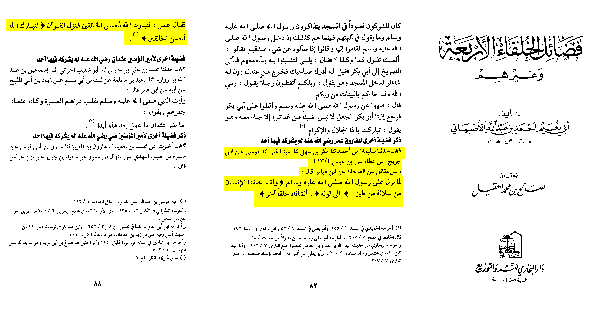
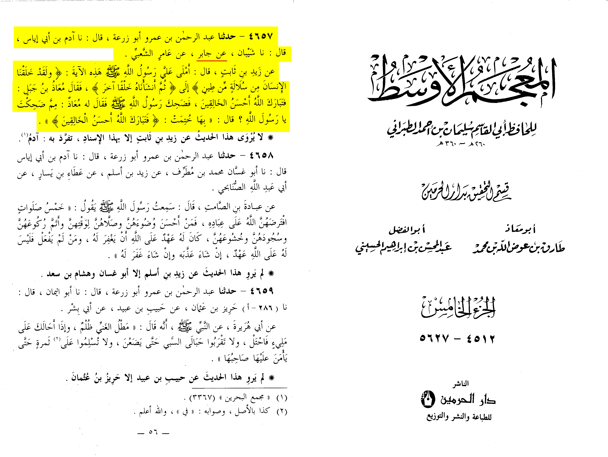
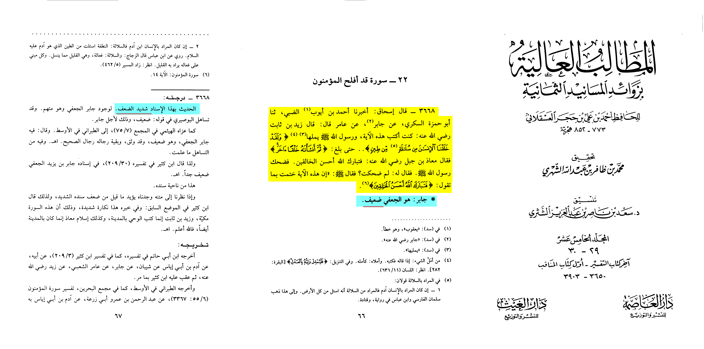
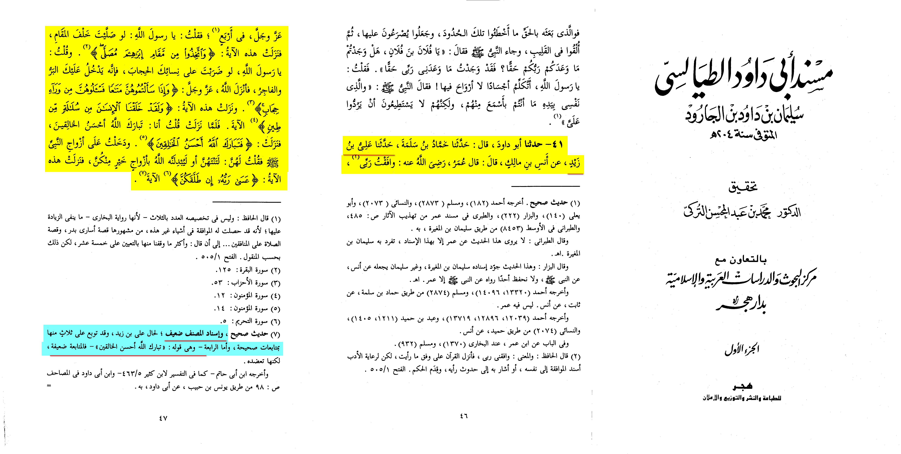
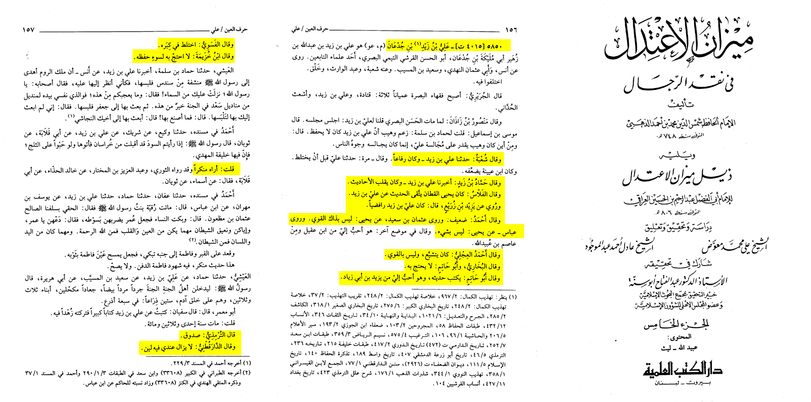

It was numerously proven that the Quran can not be replicated. Many proofs can be found on this website.
Ok lets start the Jarh (criticism) of these narrations.
First narration is recorded by Al-Asbahani:
« Sulayman bin ahmed told us that Abu bakr bin sahl told him that abdul-ghani told him that musa bin abdulrahman told him on the authority of ibn juraij on authority of ‘Ataa on the authority of ibn abbas, and on the authority of muqatil on the authority of dahak on the authority of ibn abbas: when (23:14) was revealed to the prophet Umar said “So Blessed is Allah, the Best of Creators.” So this verse got revealed next »
•📓 [Fada’il al-Khulafa’ Al-Arba’ā | 87-88]
The common way of this goes by Musa bin abdulrahman who is a known liar (Al-Kamal fi du’afa’ al-Rijal 8/66 http://hadith.islam-db.com/narrators/7746/%D9%85%D9%88%D8%B3%D9%89-%D8%A8%D9%86-%D8%B9%D8%A8%D8%AF-%D8%A7%D9%84%D8%B1%D8%AD%D9%85%D9%86)
This was pointed out by the muhaquiq (Authenticator/reviser) Salih bin muhammed Al-‘aquil where he weakned this narration same source mentioned above footnote 1.

Other problem is Ibn Juraij not explicitly saying he heard from ‘ata’ why does this matter? Ibn juraij is a mudalis if he doesn’t clarify he heard from the person he is narrating from it wouldn’t be accepted from him (Taqrib at-tahzib 363), other problem with the second chain there is muqatil bin sulayman who is a mujasim and a liar (
http://hadith.islam-db.com/narrators/32041/%D9%85%D9%82%D8%A7%D8%AA%D9%84-%D8%A8%D9%86-%D8%B3%D9%84%D9%8A%D9%85%D8%A7%D9%86-%D8%A8%D9%86-%D8%A8%D8%B4%D9%8A%D8%B1
) he is reporting from dahak so is reporting from ibn ‘Abbas only problem dahak didn’t hear from ibn abbas.
#2 report this time from Mu’adh bin jabbal recorded by At-Tabrani:
« Abdulrahman bin ‘Amr Abu Zur’a told us he said Adam bin Abi Iyas told us that he said Shiban told me on the authority of Jabir on the authority of ‘amir ash-shu’bi on the authority of zaid bin thabit he said Allahs messenger (may Allah bless him and grant him peace) recited upon me this verse (23:14) so Mu’adh Bin Jabal said “Blessed is Allah, the best of creators”. So Allahs messenger laughed so Mu’adh bin jabal asked why are you laughing o messenger of Allah he said I finished with it “Blessed is Allah, the best of creators. »
•📓 [Al-Mu’jam al-Awsat (5/56)]

Now who is jabir in the chain ? he is jabir Al-Ja’fi who is weak (Al-‘Ūqaili Du’afa al-Rijal)
This report was actually weakned by ibn hajar himself where he states:
« Abdulrahman bin ‘Amr Abu Zur’a told us he said Adam bin Abi Iyas told us that he said Shiban told me on the authority of Jabir on the authority of ‘amir ash-shu’bi on the authority of zaid bin thabit he said Allahs messenger (may Allah bless him and grant him peace) recited upon me this verse (23:14) so Mu’adh Bin Jabal said “Blessed is Allah, the best of creators”. So Allahs messenger laughed so Mu’adh bin jabal asked why are you laughing o messenger of Allah he said I finished with it “Blessed is Allah, the best of creators.
He (Ibn hajar says): Jabir is al-Ju’fi who is da’if (weak narrator). Al-Nashatri the muhaquiq commenting on this « the hadith with this chain of transmission is extremely weak even with the cooberated evidences.»
•📓 [Al-Matalib al-'Aliya (15/66-67)]

A last report to support this lie is quoted from Musnad Abi dawud where he states
« 41- Abu dawud told us that hamad bin salamah told us that ‘Ali bin zaid told us on the authority of Anas bin malik he said ‘Umar said… The verse (23:14) was revealed I said “Blessed is Allah, the best of creators” so this verse was revealed »
•📓 [Musnad Abi Dawud al Tayalisi (1/46-47)]

This narration is weak due to Ibn Judan also known as Ali bin Zayd.
Al Dahabi states in Mizan al itidal :
Shuba said: He was honorable
Hammad bin yazeed: He used to mix Ahadith
Fulas said: Yahya Ibn Qatan used to take and uphold his aḥadīth
Narrated by yazeed bin zury: Ali bin yazeed was a Rafidhi.
Ahmad said: He is weak
Yahya: he is not strong
Yahya again: he is nothing
Ahmad al ijili said: he was a shia, and not he is not strong
Bukhari and Abu Hatim said: He is not needed
Abu hatim: He writes his hadiths and I like him more than Yazeed bin Abi Zyad
Al Faswi: Makes mistakes when he got old
Ibn Khuzayama: I dont need him due to his poor memory
I (Al Dahabi) said: I reject him.
(Excuse me for the awful scan):

The muhaquiq At-Turki also says in same source footnote no.7
« Sahih hadith, but this is a weak transmittion because of Ali bin zayd and the saying of (23:14) is from his weak side »